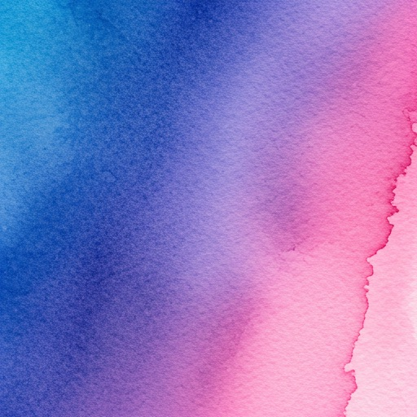
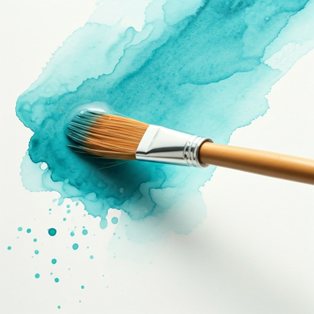
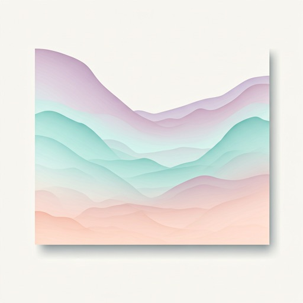
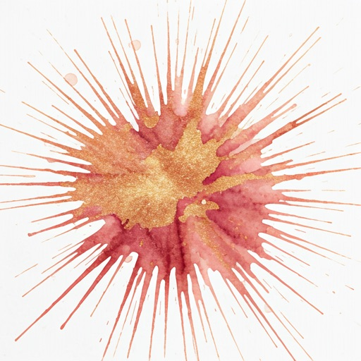

Where Pigment
Meets Pulse.
A digital sanctuary for the fluid arts. Explore a curated collection of generative watercolors and hand-bled textures designed for the experimental soul.


Curated Collections
Ephemeral strokes, eternal impressions.

The Ethereal Plains

"Art is the only way to run away without leaving home."
Experimental Studio
Join our next live pigment-mixing session.
Embracing the
Controlled Accident
Hydration
We start with pure artesian water, prepping the digital canvas for maximum bleed potential.
Pigment
Rare earth minerals translated into high-bit depth vectors for uncompromising color fidelity.
Diffusion
Natural atmospheric physics govern how our colors blend and dry over time.
Fresh Ink in your Inbox.
Subscribe to receive limited edition prints and studio updates every Sunday.